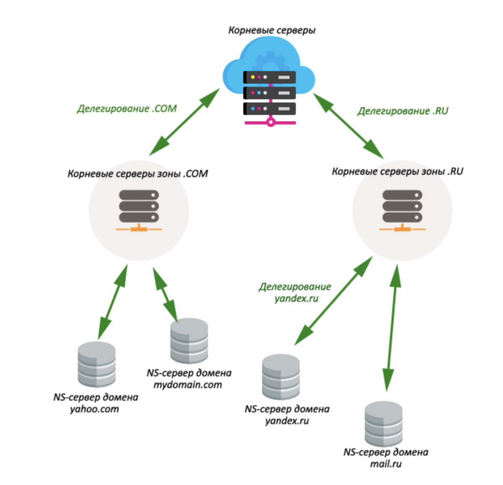

Новосибирский государственный технический университет
факультет автоматики и вычислительной техники
Лабораторная работа №1
Епифанцев Георгий Андреевич
ns-сервер
DNS-сервер (Name-сервер, nameserver, NS) — сервер, преобразующий доменные имена, с которыми работают пользователи, в понятные компьютерам IP-адреса или в обратном направлении. Обычно не делают разницы между понятиями NS и DNS- серверов. Источники: https://www.nic.ru/help/chto-takoe-name-servery-(ns)_8578.html
делегирование домена:
передача корневым сервером зоны права размещения домена на определенном NS- сервере. Для примера, корневые сервера ДЕЛЕГИРУЮТ зону .COM на серверы, которые будут за нее отвечать, а серверы зоны .COM ДЕЛЕГИРУЮТ домен MYDOMAIN.COM на NS-сервера хостинг-провайдера или на какие-либо другие. Само делегирование означает, что на корневом сервере для домена присутствуют записи IN NS, указывающие на NS-сервер, на котором размещена информация по домену Источник: https://wiki.diphost.ru/NS-server
A-запись:
А-запись указывает адрес, куда должен ссылаться Ваш домен. Обычно это адрес хостинг-сервера, на котором располагается контент (содержимое) сайта. Источник: https://www.domenus.ru/support/help/group/1343472/question/tipy-zapisi-a- zapis-cname-mx-txt
MX-запись:
MX-запись используется для указания почтового сервера, который использует этот домен. В качестве значения можно указать его адрес в виде домена или IP-адрес. Для домена можно указать несколько МХ-записей, указав для них разные приоритеты: запись с приоритетом 10 будет использоваться при получении почты первой, а если она по каким-то причинам недоступна, то запрос пойдет на запись с приоритетом 20 и так далее. Источник: https://www.domenus.ru/support/help/group/1343472/question/tipy-zapisi-a- zapis-cname-mx-txt